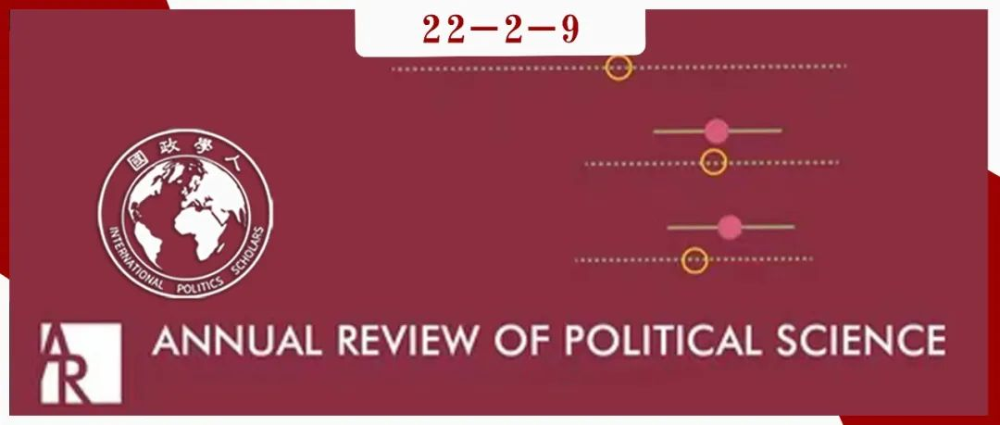

收录于合集

作品简介 ****
作者： P. E. Tetlock，俄亥俄州立大学政治学和心理学系；J. M. Goldgeier，乔治华盛顿大学政治学系
编译： 王浩宇（国政学人编译员，广东外语外贸大学）
来源： J. M. Goldgeier and P. E. Tetlock，Psychology and International Relations Theory， Annual Review of Political Science ，2001 4:1, 67-92

导读
冷战结束后，结构性压力消失，各种行为体在国际体系中发挥作用的空间扩大，这也促进国际关系研究者转向更多的研究路径与方法，有利于使国际关系学科研究多样化发展。
本文属于将心理学理论纳入到国际关系理论研究的一次尝试，这种尝试在新古典自由主义理论中体现得尤其明显。作者认为，心理学能够为国际关系理论三大范式的解释提供补充。本篇文章采用还原主义的研究方法，借用心理学的知识弥补了部分现有理论的不足与缺陷，为解释国家行为和对外政策提供新的思路。
总之，本文将两大领域的理论相互结合，从心理学的角度对现有国际关系主流理论提供了代替性解释，在国际政治心理学理论的发展过程中起到了一定的启发性作用。
摘要
国际政治的核心宏观理论依赖于对人类认知和动机的最小假设。国际关系理论研究的大多数学者认为他们的模型（几乎）不需要依赖个人和群体行为的心理学解释。但当仔细研究这些被奉为圭臬的传统理论时，本文认为这些理论解释相关趋势或事件的能力取决于更广泛的隐含的心理学假设。本文的目标是证明心理学的发展如何能够为国际关系中观和微观理论提供借鉴。由于篇幅限制，文章主要关注新现实主义、新自由制度主义和建构主义，特别是每个理论框架中与社会心理学联系特别紧密的观点。
编译
01
现实主义
那些认为最不需要考虑心理因素的人是严格的结构现实主义者。但事实证明，将心理学假设纳入现实主义，特别是新现实主义的框架中更为先进。在结构现实主义阵营中，有些人将国家视为无政府体系中的安全最大化者，要求实行权力平衡政治；另一些人将国家描述为追求霸权主义目标的权力最大化者。华尔兹预测，随着国家在国际体系中的社会化，它们普遍倾向于做出理性的、安全最大化的决定。在米尔斯海默看来，国家面临着更大的压力，需要形成对世界的准确表述，并及时对其他大国的行动做出反应。安全最大化的防御性理论认为，国家对自己在体系中的地位感到满意，这些维持现状的大国将倾向于规避损失，不愿意推行可能引发反制的扩张主义政策。权力最大化的进攻性理论认为国家更多的是在寻求收益，并假设在没有霸权的情况下国家永远不会满足。无论哪种方式，国家都倾向于持有深度怀疑的态度，并对国际体系中其他国家的行动谨慎地做出最坏的假设。
前景理论可以说是主观预期效用最大化、最有影响力的理论之一，可以帮助区分华尔兹和米尔斯海默国家动机模型的适用条件。前景理论认为，在某些条件下，决策者愿意采取比其预期风险计算更合理的行动方案。前景理论也揭示了人们经常提到的威慑与拨乱反正之间的差异。诱使一个国家放弃它已经拥有的东西比阻止它获得它尚未拥有的东西要难得多。事实上，前景理论以及关于禀赋效应（即一个人一旦拥有了某样东西，他的价值就会增加）的相关研究表明粗略量化估计十分困难，预期的收益往往需要比预期的损失大一倍才有相应的价值。
1.1 “极"的数量
**
**
结构现实主义者认为，随着大国数量的增加，结盟的不确定性就会增加，治国之术的错误更有可能出现。在这种观点下，两极世界是最稳定的。对于其他现实主义者来说，重点不在于权力的静态分布，而在于衰落和崛起大国的权力动态起伏，这种起伏不可避免地增加了霸主和挑战者行动的不确定性。多极化的复杂性增加了 及时准确处理能力分布相关信息 的难度，为错误和偏见创造的机会。国家（以及决策者）有限的信息处理能力可能被不利的 信噪比环境 所淹没。当权力平衡更难衡量时，或者当国家在系统中的位置越来越不确定时，误判的可能性就变得更大，战争的几率随之上升。 心理学文献表明，决策者很容易受到稀释效应（dilution effects，指中性的或非相关性的信息弱化判断或印象的趋势）的影响。从这个角度来看，信噪比越小，决策者被无关紧要的东西分散注意力的风险就越大，而那些无关紧要的东西可能是对手故意引入的，以混淆关键信息。
1.2 误判
一些现实主义者在他们的理论框架中插入了心理学因素，认为决策者对现实的误判不是随机的，而是有原因的。一类误判涉及潜在盟友。华尔兹指出了在多极环境中发生的两个错误：国家做得太多/太少。其一，国家可能会被盟友拖入战争（一战模式）；其二，国家可能会搭便车，希望他国制衡潜在的侵略者（二战模式）。当误判进攻优势占上风时，可能造成过度耦合；当误判防守优势占上风时，可能出现搭便车现象。这种模式会被简单的类比推理所放大，导致国家借鉴错误的历史先例。 未能及时对军事技术和/或联盟内部行为的变化进行贝叶斯式的更新评估，导致认知和现实之间的系统性滞后。而关于判断和选择的心理学文献表明，大多数决策者不是天然的贝叶斯主义者。 第二类误判涉及潜在的对手。第一种是将维持现状的大国错误地贴上扩张主义的标签，从而导致冲突螺旋式上升；第二是将扩张主义大国错误地贴上维持现状的标签，导致威慑失败。杰维斯从社会心理实验中得出第一种误判更常见，这是由于基本的 归因错误（观察者过于迅速地从出于他国的防御性准备中得出强烈的敌对意图的处置性推断）和信念坚持（观察者过于缓慢地修正他们对意外事件最初的因果推断）。
1.3 进化
一方面，进化心理学的某些分支强调了现实主义者怀疑倾向的好处。另一方面，现实主义的论点远远没有排除认知偏差和错误，而是加强了心理学的分析，这些分析强调了对意向性（intentionality）做出快速判断的好处（特别是对潜在的威胁性行为），以及过早改变想法的危险性。 沃尔特表明，由于对有偏见的信息的依赖，错误的判断比比皆是，在许多情况下会出现自我毁灭的猜疑螺旋，而意识形态是对其他国家进行准确评估的障碍。其他现实主义者将扩张主义归结为领导者需要满足不同的联盟以保持权力。精英阶层中的不同团体对决策者提出了相互矛盾的责任要求，从而使整体政策的一致性降低。在这种情况下，每个特定的精英集团的回报是理性的，但回报的总和却产生了非理性的、矛盾的行为。外部观察者往往低估了产生政策产出的各派别之间互动的内部复杂性，这种低估可能是过度集中和实体性认知偏差的产物，也可能是对其他国家的行为进行严格问责的战略性决定。 进化理论只保证生物体不断地适应环境，而不是成为完美的贝叶斯人（真理寻求者）或效用最大化者。自然选择并不关心真理，只关心国家生存。从国家安全的角度来看，安全和错误往往比遗憾更好。
1.4 调节变量
作者假设错误和偏见的根源是个人和集体行为者过度依赖简单的、容易执行的启发式方法。倘若假设是正确的，那么鼓励行为者参与更多的自我批评和反思的信息处理形式的社会、政治和经济系统，将会减少偏见。有两套重要的理性社会制度调节者值得一提。首先是组织和国内问责制的压力。实验表明，在理想的情况下，决策者在做出不可逆转的承诺之前应该背负责任感，他们应该对决策的受众负责。此外，应该通过创造规范的模糊性（决策者不应该知道别人想听什么）或冲突性（决策者知道别人想听什么，利益互相矛盾）使决策者谨慎决策。其次是市场竞争压力。长期以来判断性偏见只在单一博弈的情况下成立，决策者很少收到有关其决定的反馈，且缺少物质激励来使其决策正确。当把决策过程转移到开放和透明的市场环境中时，市场提供了重复博弈环境，使得决策者可以与细心的竞争者进行互动并为其决策后果提供快速、明确的反馈。
综上，理想的情况在复杂的社会和政治问责网络中展开的。
1.5 过度理性
心理学可以阐明冷战期间的一个长期问题，即深思熟虑的决策者不愿意接受核革命的激进战略影响。在这种情况下，问题不在于认知偏差，而在于 “太聪明 “或过度理性。一个行为博弈论精辟说明了这个问题：参赛者在0到100之间猜一个数字，目标是尽可能地接近所猜的平均数字的三分之二。为了模拟如何玩这个游戏，必须考虑到两种个人的复杂性差异：逻辑和心理。首先，代理人在他们处理的逻辑层次的数量上有所不同。“33”的猜测结果反映了一个层次（猜测他人的平均猜测是50，50的2/3是33），“22”是第二个层次（认为他人进行第一轮逻辑推理后猜测的数字是33，33的2/3是22），以此类推。其次，代理人对其他行为人的心理假设不同，这些行为人通过必要的推理得出逻辑上正确的答案的可能性也不同。杰维斯对所谓的反制战略的批判反映了上述过程。美国有些学者支持美国需要在每一级的战争中都能反制对手，从而使其对手不敢发动哪怕是小规模的攻击。在杰维斯看来，这种观点"太理性了”。威胁之所以有效，并不是因为美国会实施它，而是因为在战争中它是一种可能性，而核战争的可能性足以阻止他国的进攻。鉴于核武器的特殊心理和它们所激发的终极恐惧感，创造有限战争选择的努力是不必要的（浪费资源），甚至会产生反作用，因为它发出的信息是默许在足够"低"的水平内发生冲突。
02
新自由制度主义
基欧汉接受了“国际体系是无政府的，由单一的、利己主义的行为者所组成的”这一观点，但他仍然坚持认为，这些行为者在原则上和实践中，有可能建立制度框架来确保合作的收益。从理论上讲，只要创建过程在经济上是合理的，就应该产生跨国机制。心理学家可能会对此持怀疑态度，认为这样的主张过于严格和宽泛。过于严格是因为制度还可以通过“节省交易成本之外”的目的产生。过于宽泛是因为即使满足了经济制度主义者的所有先决条件，行为体也可能无法形成制度。在新自由制度主义模型中，那些认识到他们处在重复博弈之中，并且临时解决方案的交易成本很高的行为者，会理性地签订有约束力的契约。即使成员国之间的权力平衡发生了变化，这种契约仍然可以持续下去。新自由制度主义者认为，随着国内政治行动者了解到继续参与国际制度的价值，国际机构可以随着时间推移改变国家利益。作者认为心理学可以为这些类型的制度分析提供参考的关键问题是：国家何时以及为何首先寻求建立制度；国家何时以及为何遵守制度规范和原则；随着时间的推移，制度是否以及何时改变决策者对国家利益的概念。
2.1 创造制度
决策者对问题的个人或共同的心理表征（思想）形成了对制度的判断。在此，作者将环境的透明度作为一个基本的调节器，来说明心理学层面解释的价值。透明度越高，现实与心理表征之间的滑动就越少。透明度有两点特别重要。首先是观察者对基本事实的辨别能力。第二是得出合理的因果推论的能力。在透明度连续体的一端，是由认识论群体制定的政策，他们凭借在分离因果关系方面的技术和科学成就而拥有巨大的权威和声望。在先进国家的主流政治精英中，几乎没有人准备质疑来自这些团体的专业建议。在透明度连续体的另一端是政策领域，在这些领域中，学术界要么分歧很大，要么相对不发达。当制度设计从受"坚实的科学指导”的"众所周知的事实"转到专家群体存在严重分歧、认知和情感偏见有充分机会影响对证据和选择的评估的领域时，心理学构造的潜在解释作用迅速扩大。
2.2 遵守与转变
国际关系理论家对国家为什么要遵守国际机构的要求，以及这些机构是否能改变国家对其利益认知等问题存在很大分歧。连续体一端是“遵从”，即决策者完全出于对参与国际机构的物质回报和惩罚的功利性计算而加入这些机构。在这个连续体的中间部分，是那些做了人们所期望的事情的决策者。他们寻求在国内/国际受众的眼中建立特定的社会身份，而这些受众的意见是他们所珍视的，也因为他们可能不愿意承担叛变的声誉成本。这种社会影响的形式，有时被社会和组织心理学家称为“认同”，比单纯的“遵从”更具有环境针对性，但它仍然不代表成熟的内化。当继续向连续体的内化一端迈进时，国家不仅在做正确的事情，而且是为了他们认为正确的理由而这样做。这种计算不再是功利性的，而是以道德、宗教或意识形态的理想为指导。历史原型可能包括斯堪的纳维亚和加拿大的对外援助方法，以及某些革命国家寻求向邻国输出其意识形态的态度。
心理学的贡献之一是划定决策者可能改变其态度的条件。研究表明，当决策者认为他们有一些自由选择的因素时，他们特别有可能内化与自己的行为相一致的态度。值得注意的是，要求遵守的外部压力不能过于强硬；否则，人们会把他们的行为归因于外部要求，而不是内部价值或态度。
制度主义者认为，制度的有效性在很大程度上取决于制度是依赖于政治决策还是相对独立的专家或司法程序。对规范执行的理性选择方法强调了搭便车的危险。实验社会心理学和微观经济学的研究表明，人们往往愿意做出巨大的牺牲来惩罚社会契约中的欺骗者。规范的内化程度越深，越轨行为越恶劣，人们的情绪反应就越强烈，就越愿意不顾一切地去惩罚越轨者，甚至惩罚那些没有惩罚越轨者的人。这一分析表明，建立在分配性和程序性正义的共同概念上的国际机构，即使在没有强大的中央权威的情况下，也能使自己永久存在。最后，前景理论预期，即使是试图严格保持中立的观察者也会表现出维护现状要求的偏好，形成捍卫现状的心理动力也比形成推翻现状的动力要容易。
03
建构主义
许多建构主义者则认为选择过程在很大程度上受到强制性行动逻辑的影响，在这种情况下，人们通过将其“社会身份”与其对规范性环境的评估进行匹配。只要对个体行为者的动机做出明确的假设，这些假设就会强调规范遵循的逻辑，为行为体的身份构建和行为提供指导，而社会秩序是由系统中的行为者互动构建的。
在基础层面上，对世界政治的认知心理学分析与建构主义方案是一致的。从认知主义的角度来看，所有的因果推论和政策教训都是心理建构的产物。原则上，有无数可能的背景因素，在实践中，观察者必须依靠严苛的简化规则，把要考虑的情景数量减少到可控的数量，这些简化规则通常来自认识论群体的共同理解。 建构主义者认为权衡推理非常困难，规范和实践会引导决策者对思考的问题设定界限。有学者区分了三种类型的权衡：常规、禁忌（世俗对神圣）和悲剧（神圣对神圣）。常规的权衡是比较世俗价值的相对重要性的推理类型，禁忌权衡是将金钱等世俗价值与保护人权或生态系统等神圣价值对立起来，而悲剧权衡是将两种神圣的价值对立起来。这些区别在心理上和政治上都有影响。做出禁忌权衡的决策者往往会被他们曾经领导的道德团体所排斥，而实际决定在语义上属于常规或悲剧性的权衡则是完全可以接受的。决策者们将竭力把他们的决策过程描绘成没有任何禁忌权衡的污点，而他们的对手也同样顽强地努力说服关键的支持者。对于建构主义者来说，悲剧性的，非禁忌的权衡是被允许的。
心理学分析渗入建构主义世界政治方法的第二种方式，反映在前景理论和禀赋效应中。建构主义者试图解释的辩论的一个主要焦点是公平性。经济学家们把人类视为完全自利，并假定当自利与道德价值发生冲突时，自利一般会占上风。但情感（强烈的、深入内心的关于公平的直觉）也可以塑造战略互动。与嫉妒有关的情绪可能破坏那些利益不对称的贸易协议。从积极的一面来看，同样的情绪，只要与正义动机有关，就可能有助于阻止潜在的剥削者利用对其他各方不公平的优势。
最后，建构主义分析家可以有效地借鉴心理学来说明建构主义“无法明确不同群体认为不同规范适用的条件”的问题。有两条研究路线有帮助。第一，关于“自然分类”的实验警示， 这种分类方式不是根据经典逻辑的原则（规定明确的必要条件和充分条件，以便将一个给定的实例分类），而是根据模糊逻辑的原则（根据实例与其他类别或理想化原型的相似性来判断该实例是否属于该类别）。 第二，跨文化心理学的理论进展提出了可以调节个人或群体之间关系的规范分类法。反过来，这些分类法可以生成关于决策者何时更（不）可能依赖各种规范性规则作为行动指南的假设。Fiske的关系图示模型中的三个关系模式在理论上界定了建构主义的议程。 规范可以采取平等匹配（对等的互惠，一个国家根据其他国家的最新行动的方向和规模来调整积极或消极的反应），权威排名（例如赞助人-客户/霸主- 卫星的关系，地位低的一方在一定的活动议程内必须服从地位高的一方），以及共同分享（例如民族国家决定废除边界并融合为一个共同的政治实体）。 不同机制所遵循的关系模式导致不同类型的规范遵循逻辑和实施规则。尽管每个机制中都有一个霸主，但行为规范却不尽相同。如果建构主义要解释行为者的身份是如何与结构相互构成的，那么就需要知道在特定时间内存在哪些关系互动模式，以及规范性逻辑是如何根据三者中的哪一个占主导地位而有所不同的。
04
结论
宏观层面的理论家应该关注心理学在有关权力、制度和规范的关键辩论中的作用，并考虑世界政治环境和认知如何相互作用，而不是抵触心理学的解释力。
词汇整理
权衡推理 Tradeoff reasoning
前景理论 Prospect theory
问责压力 Accountability pressures
**禁忌 Taboo **
**模糊逻辑 Fuzzy logic **
经典逻辑 Classic logic
审校 | 张鸿儒 晋玉
排版 | 彭雯昕
文章观点不代表本平台观点，本平台评译分享的文章均出于专业学习之用, 不以任何盈利为目的，内容主要呈现对原文的介绍，原文内容请通过各高校购买的数据库自行下载。

国政学人
支持学术公益与知识传播
微信扫一扫赞赏作者 __赞赏
已喜欢，对作者说句悄悄话
取消 __
发送给作者
发送
最多40字，当前共字
上一页 1/3 下一页
长按二维码向我转账
支持学术公益与知识传播
受苹果公司新规定影响，微信 iOS 版的赞赏功能被关闭，可通过二维码转账支持公众号。